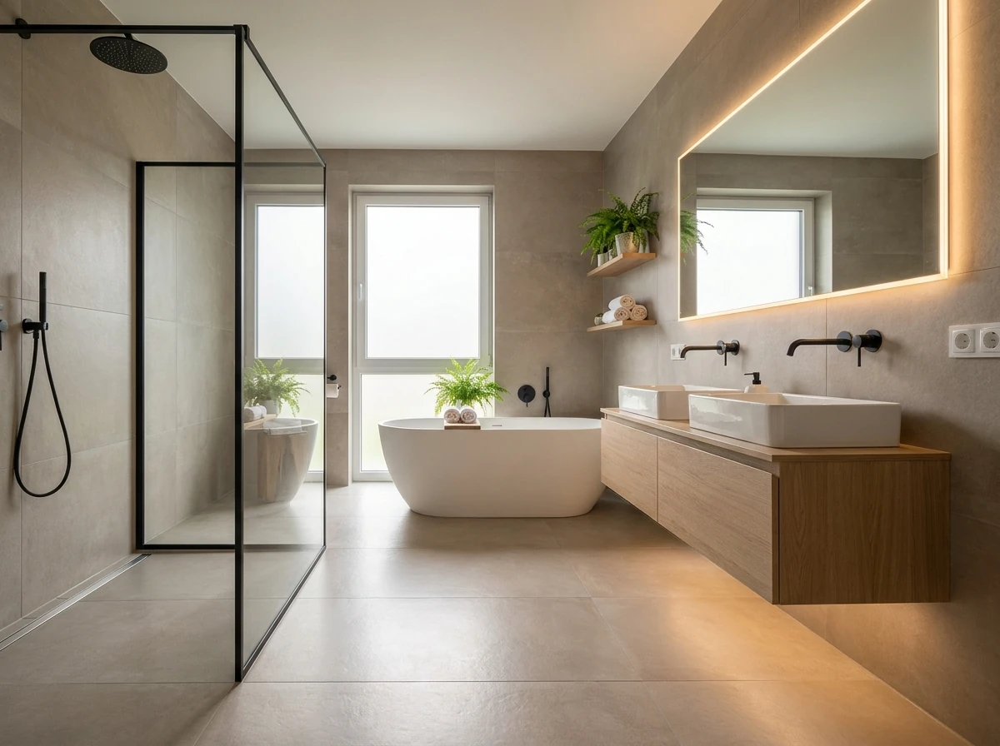
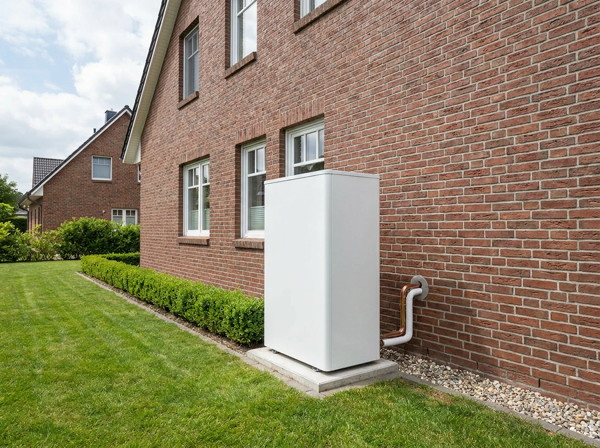
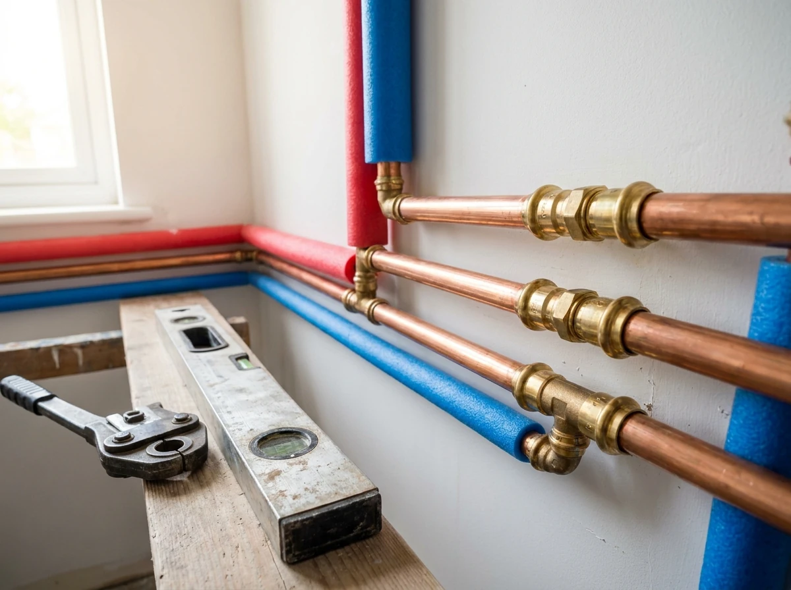

Leistungen
Bad, Heizung, Lüftung und Service aus einem Betrieb. Das heißt für Sie: ein Angebot, ein Terminplan, ein Ansprechpartner – und niemand, der sich hinter einer anderen Firma versteckt.
Bad & Sanitär
Wir bauen Bäder komplett – von der Skizze am Küchentisch bis zur letzten Fuge. Fliesenleger, Elektriker und Maler koordinieren wir mit, damit Sie nicht fünf Firmen hinterhertelefonieren müssen.


Heizung & Wärmepumpe
Wir verkaufen keine Technik, die gerade Trend ist, sondern die, die bei Ihnen rechnet. Grundlage ist immer eine Heizlastberechnung – nicht ein Blick auf den alten Kessel.
Wartung & Service
Die meisten Heizungsausfälle kündigen sich an. Eine Wartung im Sommer kostet einen Bruchteil eines Notdiensteinsatzes im Januar – und Wartungskunden bekommen bei uns den ersten freien Termin.
Jährliche Inspektion von Kessel oder Wärmepumpe, Reinigung, Abgas- und Druckprüfung, Einstellung der Regelung. Auf Wunsch mit Erinnerung, damit Sie nicht daran denken müssen.
Legionellenprüfung, Spülungen, Filter- und Enthärtungsanlagen. Besonders wichtig in Gebäuden mit wenig genutzten Leitungen oder nach längerem Leerstand.
Tropfende Armaturen, laufende Spülkästen, defekte Thermostate, verstopfte Abflüsse. Kleine Dinge, die den Alltag ärgern – meist in einem Termin erledigt.
Wohnraumlüftung & Klempnerarbeiten
Je besser ein Haus gedämmt ist, desto weniger lüftet es von allein. Eine kontrollierte Wohnraumlüftung führt Feuchtigkeit ab, bevor Schimmel entsteht, und holt über die Wärmerückgewinnung einen großen Teil der Heizenergie zurück.

Notdienst
Unser Notdienst ist rund um die Uhr unter 04541 5501 erreichbar. Diese drei Dinge helfen uns – und Ihnen – am meisten:
Hauptabsperrhahn zudrehen. Er sitzt meist im Keller oder in der Hauswirtschaftsraum-Nähe des Wasserzählers.
Bei Wasser in der Nähe von Steckdosen oder Elektrogeräten den betroffenen Sicherungskreis ausschalten.
Sagen Sie kurz, wo es herkommt und was Sie schon gemacht haben. Dann bringen wir gleich das richtige Werkzeug mit.
Für den Fall der Fälle
Rund um die Uhr erreichbar – im Winter auch nachts und am Wochenende.
04541 5501Nächster Schritt
Ein kurzer Anruf oder drei Zeilen im Formular genügen. Sie hören innerhalb eines Werktages von uns.